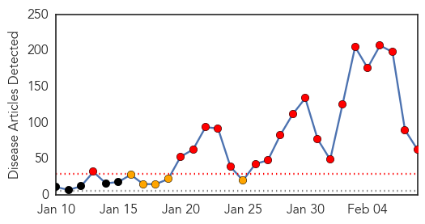
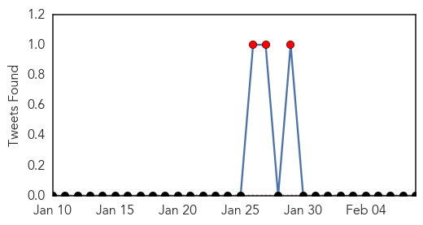
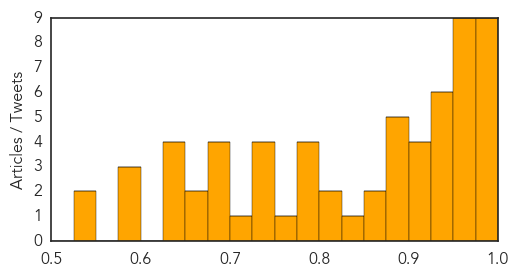

Ebola
30-Day Web Trend
0 alerts, 0 warnings

30-Day Twitter Trend
2 alerts, 0 warnings

Article Locations

Article Confidences

Top Articles:
- 0.997
- Guinea to Expand Use of Experimental Anti-Ebola Drugs
- 0.997
- The Government of Canada announces return of a mobile laboratory from Kailahun, Sierra Leone
- 0.995
- Ebola vaccines testing starts in Liberia
- 0.990
- Guinea To Expand Use Of Experimental Anti-Ebola Drugs
- 0.988
- Government pledges nearly £33m to new Ebola fund
- 0.958
- We must separate fact from fiction on health
- 0.951
- Japan blocks journalist from flying to Syria citing concerns for personal safety
- 0.951
- Former US Federal Reserve head says Eurozone cannot survive with Greece
- 0.951
- US airline execs want government to annul open skies agreement with GCC states
- 0.951
- Jailing of Burundian journalist raises concerns ahead of elections says UN rights office
- 0.951
- Tunisia Arrests 32 Militants, Says It Foiled 'Spectacular' Attacks
- 0.839
- West African communities receiving Ebola’s orphans with open arms
- 0.838
- World leaders meet over safeguarding future global security
- 0.836
- Fort Magsaysay eyed as quarantine area for Ebola patients
- 0.815
- Calgary woman leaves for Ebola-stricken Sierra Leone
- 0.636
- Nobel Laureate Leymah Gbowee Raises Ebola Awareness
- 0.590
- I'll tackle challenges facing West African sub region
- 0.529
- Mahama proposes cooperation against international crisis
- 0.528
- President Mahama feasts with the Diplomatic Corps at Peduase
- 0.521
- Billions Go To Victims Of Disaster And Disease. Does It Really Help?
- 0.521
- Billions Go To Victims Of Disaster And Disease. Does It Really Help?
- 0.521
- Billions Go To Victims Of Disaster And Disease. Does It Really Help?
- 0.521
- Billions Go To Victims Of Disaster And Disease. Does It Really Help?
- 0.521
- Billions Go To Victims Of Disaster And Disease. Does It Really Help?
- 0.521
- Billions Go To Victims Of Disaster And Disease. Does It Really Help?
- 0.505
- 1,000th solar suitcase is a beacon in developing world
- 0.504
- Billions Go To Victims Of Disaster And Disease. Does It Really Help?
Top Tweets:
- 0.637
- Fort Magsaysay eyed as quarantine area for Ebola patients - Philippine Star http://t.co/Wng3ZFRfGv ebola EVD
- 0.595
- [HUFFPOST] Ebola Epidemic Takes a Toll on Sierra Leone's Surgeons http://t.co/gvfq7so2wS EBOLANEWS
- 0.522
- Ebola Challenges Hands-On Tool - New York Times http://t.co/BU9fKskzoH ebola EVD
- 0.514
- Burnings Bombings Ebola: Not All Dramatic Events Are ?Game-Changers? - Daily Beast http://t.co/7MKqWIEMnH ebola EVD
- 0.514
- Burnings Bombings Ebola: Not All Dramatic Events Are ?Game-Changers? - Daily Beast http://t.co/7KMJQKQBQu ebola EVD
Measles
30-Day Web Trend
20 alerts, 5 warnings

30-Day Twitter Trend
3 alerts, 0 warnings

Article Locations
Article Confidences
Top Articles:
- 0.992
- S. Utah still unaffected by measles, so far
- 0.991
- Montgomery County Health Department provides facts on measles
- 0.987
- Why you should, and shouldn't, worry about measles
- 0.985
- 3 more measles cases confirmed at Chicago-area day care
- 0.985
- The best way to persuade parents is the worst for kids
- 0.984
- Health care experts: Local measles outbreak unlikely
- 0.982
- Measles cases at Chicago-area day care center rise to 5
- 0.981
- Measles Outbreak: What You Need to Know
- 0.980
- Infectious diseases expert discusses the myths and facts about measles outbreak
- 0.974
- Is the Anti-Vaccination Movement Going to Cause an Epidemic?
- 0.974
- Measles: The pathology of a comeback
- 0.965
- Sen. Schumer Calls On CDC To Make Measles Vaccine More Accessible – The Yeshiva World
- 0.965
- How bad is measles around the world?
- 0.961
- CDC Q&A: Measles and Vaccine To Prevent It
- 0.956
- Experts say measles outbreak unlikely in Massachusetts
- 0.955
- To Vaccinate or Not to Vaccinate
- 0.953
- Vaccinations an obligation, not a choice
- 0.950
- Illinois measles cases put focus on day care centers Republican American
- 0.947
- NY Sen. Schumer wants measles vaccine more accessible
- 0.947
- Sen. Charles Schumer Wants Measles Vaccine More Accessible « CBS New York
- 0.944
- The Vaccine Debate
- 0.934
- Top New York lawmaker urges CDC for free measles vaccination shots
- 0.931
- Gupta: 97% immunization rate has W.Va. ready for measles outbreak
- 0.927
- Five Infants Infected in Measles Outbreak in Chicago Suburb
- 0.924
- Germany battling measles outbreak 10 times worse than the one in U.S.
- 0.914
- NH leads the nation in vaccinations for measles, mumps and rubella
- 0.905
- Measles shots are effective: Officials
- 0.904
- Examining the Anti-Vaccine Movement and Religious Laws
- 0.897
- Measles cases at Chicago-area day care center rise to 5
- 0.893
- Montgomery County Teen Did Not Have Measles, Health...
- 0.889
- Germany battling a measles outbreak that is 10 times worse than the one in US
- 0.887
- Day-care sites present a gap in measles fight
- 0.879
- How serious are measles?
- 0.851
- Most area school districts fall below state average of vaccine exemptions
- 0.851
- Measles outbreak in Germany raises few alarms
- 0.831
- Sen. Charles Schumer calls on Centers for Disease Control and Prevention to make measles vaccine more accessible
- 0.825
- The Politics of Measles
- 0.807
- Some rethink shunning vaccines after scare Republican American
- 0.792
- Health official: Benefits of measles vaccine is 'almost obvious'
- 0.790
- Opinion: Middle ground elusive in vaccination wars
- 0.780
- Incidence of preventable diseases linked to vaccination waiver rates
- 0.776
- Christie: Parents should have choice in vaccinations
- 0.753
- Despite waivers, student vaccination rate high
- 0.749
- Katty Kay: Countries in Africa 'have higher vaccination rates than here in the United States'
- 0.748
- California lawmakers want to repeal 'personal beliefs' exemption
- 0.737
- Measles: As fear grows, doctors fight to sway vaccine skeptics
- 0.732
- Vaccine policy change likely to lower Michigan waivers
- 0.717
- The Eastern Echo
- 0.698
- Measles Is Back, Highly Contagious, And Now A Debate Over Vaccination
- 0.694
- Health Department Rules Out Measles In Montgomery County Teen « CBS Philly
Showing top 50 articles...
Top Tweets:
-
No tweets found for Feb 08, 2015